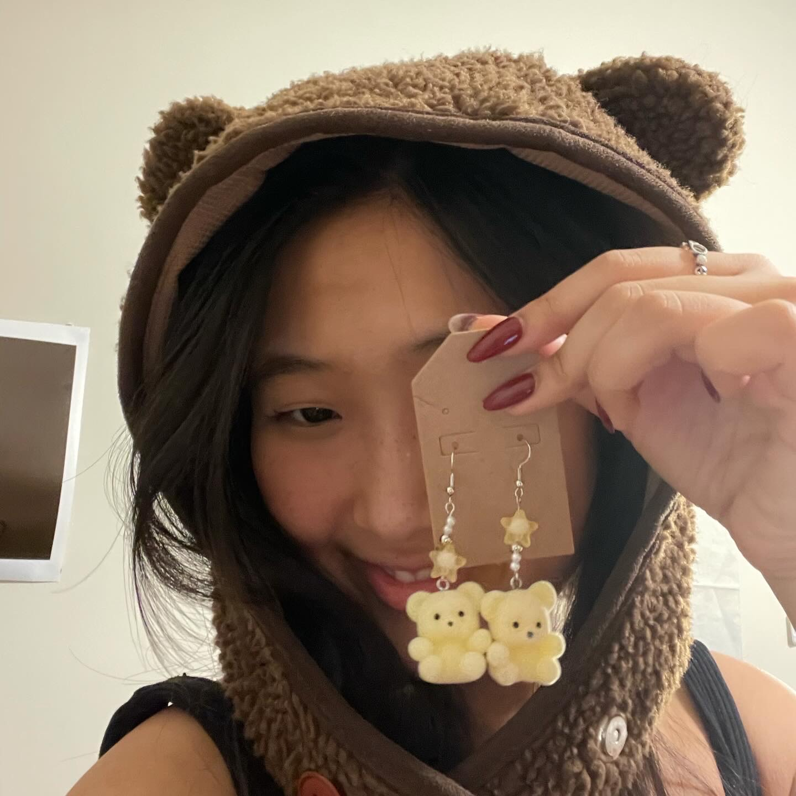

<div class="textcontainer">
<h1 style = "text-align: center;">Welcome to my PS70 Homepage!</h1>
<div>
<p class = "margin"></p>
<mark> I will document my progress and upload weekly assignments throughout the course of the semester here. </mark>
<p class = "margin"></p>
</div>
<br><br>
<h2 style = "text-align: left;">Hi, I'm Alyssa.</h2>
<p class="margin"> </p>
<div class="center-row">
<div class = "im-wrapper">

</div>
<p class = "margin" style = "padding-left: 20%;"></p>
<mark>
My name is Alyssa Suh, a member of the Harvard College Class of 2025.
I was born in South Korea and grew up moving around the States thoughout my whole life, though I now typically tell most people that I'm from Ohio (a fact that I claim proudly and also happens to be a big part of my personality).
<br> <br>
I'm studying Bioengineering which seems to be the perfect combination of my academic interest in biology and my love for making things.
I've been conducting research in Kit Parker's lab over the past few years, with topics ranging from cosmetics to recreating microfabricated pulmonary veins.
Outside of the classroom, I enjoy spending time outside, running, hiking, and cycling. I'm also obsessed with photography and art.
</mark>
<p class = "margin"></p>
</div>
<br>
<br>
<image style = "width: 20%" src = "About.png" alt = "About" class = center> </image>
</video>
</div>